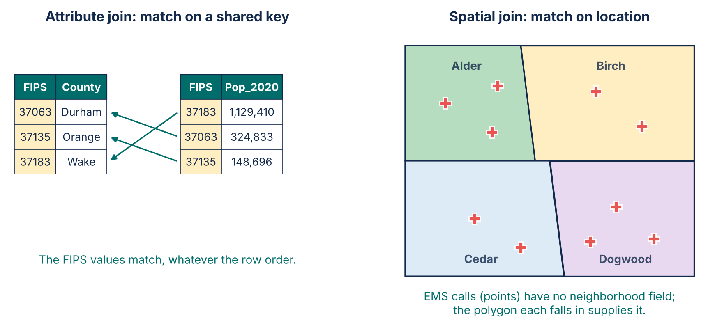
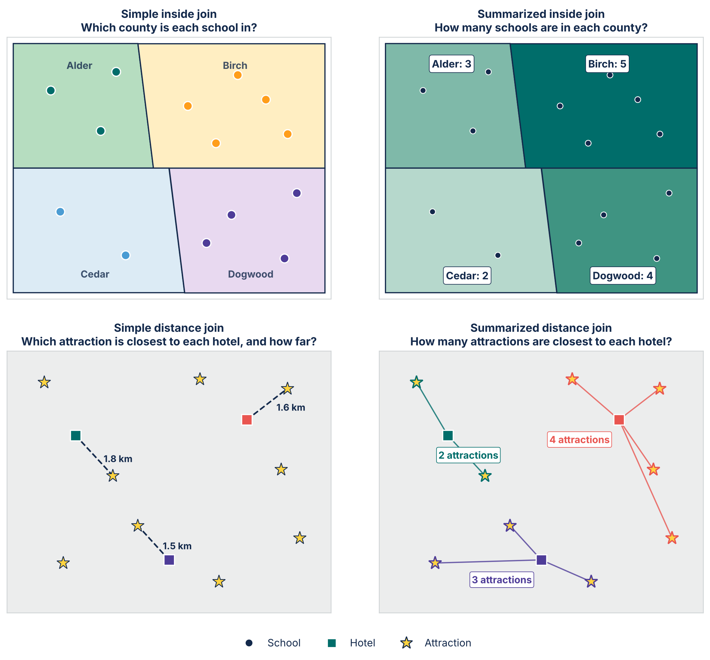
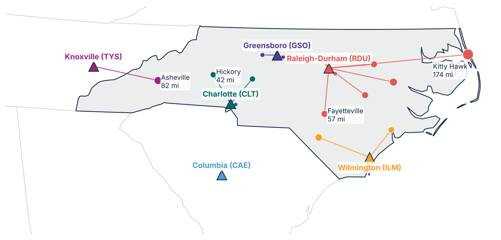
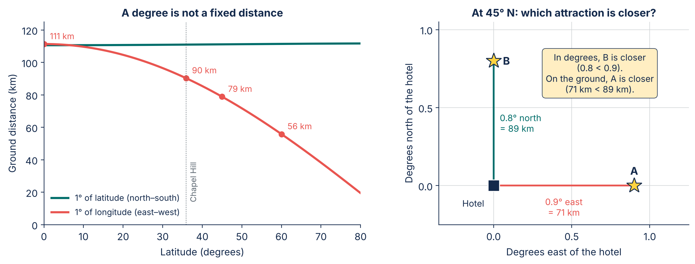
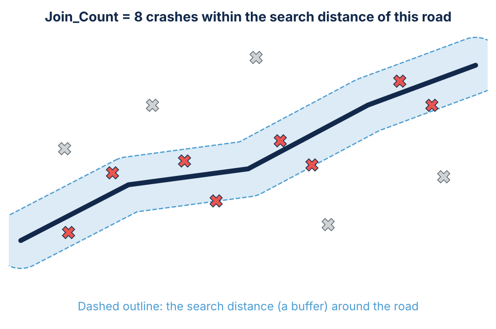

7 Spatial Joins
By the end of this chapter you should be able to:
- Explain how a spatial join differs from an attribute join, and recognize questions that need one.
- Tell the four kinds of spatial join apart: simple or summarized, inside or distance.
- Use cardinality to decide between a simple and a summarized join.
- Explain why a distance join must be run on projected data, and why projecting on the fly is not enough.
- Plan a spatial join by naming the destination layer, the relationship, and the cardinality before opening a tool.
- Run spatial joins in QGIS and ArcGIS Pro, and read their output.
Chapter 6 joined tables that share a key, such as a census table and census tracts that both carry a GEOID. Many questions involve two layers with no shared field at all:
- How many EMS calls happened in each neighborhood? The calls are points with an address and a time. The neighborhoods are polygons with a name. Neither table holds the other’s ID.
- How many students attend school in each district? The schools are points with an enrollment count. The districts are polygons.
- How much revenue does a coffee chain earn in each sales region? Revenue is recorded at each store, a point. The regions are polygons.
In each case, the only thing linking the two layers is where their features are. A call belongs to the neighborhood it falls in; a school belongs to the district that contains it. A spatial join uses that location to match the records, and then appends attributes just like the joins in Chapter 6.
7.1 What is a spatial join?
7.1.1 Location instead of a key
An attribute join matches records whose key fields hold the same value (Figure 7.1, left). A spatial join matches features whose geometries have a spatial relationship (Figure 7.1, right). Instead of asking “does this FIPS code equal that one?”, the software asks “does this point fall inside that polygon?” or “which of these airports is closest to this city?”

Everything else about a join stays the same:
- The destination layer (ArcGIS calls it the target features) is the one whose features you keep, and to which fields are added.
- The source layer (the join features) supplies the fields.
- The output is one table: every field of the destination layer, followed by the fields of the matching source feature. Destination features with no match are kept, with NULL in the new fields, unless you ask for matched features only.
Unlike an attribute join in the Joins tab, a spatial join usually writes a new layer. Your original layers are not changed.
7.1.2 Spatial relationships
Every spatial join needs a rule for deciding which source features match a destination feature. The rules come in two families:
- Inside relationships test containment or overlap: a point inside a polygon, a line crossing a polygon, a polygon within another polygon. In this chapter we call a join that uses them an inside join.
- Distance relationships test proximity: the closest feature, or every feature within a set distance. A join that uses them is a distance join.
The software calls these rules spatial predicates (QGIS’s geometric predicates, ArcGIS Pro’s match options). The names you will see in the tool dialogs are:
| Predicate | True when the two geometries… |
|---|---|
| intersects | share any point at all (the most general test) |
| contains | one has the other entirely inside it |
| within (are within) | one lies entirely inside the other (the reverse of contains) |
| touches | share a boundary, but their interiors don’t overlap |
| overlaps | share some, but not all, of their area, and are the same kind of geometry |
| crosses | a line passes through a polygon or across another line |
| equals | are exactly the same geometry |
| disjoint | share no point at all |
| within a distance | are closer than a set distance |
| closest (nearest neighbor) | are the nearest pair |
For points in polygons, intersects and within give almost the same answer. They differ only for a point that sits exactly on a boundary, which intersects counts and within does not.
7.2 Four kinds of spatial join
7.2.1 Simple or summarized, inside or distance
Every spatial join can be described with two choices (Figure 7.2):
- Inside or distance: is the relationship containment or proximity?
- Simple or summarized: does each destination feature receive the attributes of one source feature, or a summary of many?

Reading the four panels:
- Simple inside join (top left). Which county is each school in? The schools are the destination; the counties are the source. Each school gets the name and attributes of the one county that contains it.
- Summarized inside join (top right). How many schools are in each county? Now the counties are the destination and the schools are the source. Each county gets a count of the schools inside it.
- Simple distance join (bottom left). Which attraction is closest to each hotel, and how far away is it? Each hotel gets the attributes of its nearest attraction, plus a field holding the distance.
- Summarized distance join (bottom right). How many attractions are closest to each hotel? Each attraction is assigned to its nearest hotel, and each hotel gets a count of the attractions assigned to it.
Notice that the same two layers can answer different questions. Schools-to-counties and counties-to-schools are both inside joins; which layer is the destination depends on what one row of the answer should be.
7.2.2 A simple distance join: cities and airports
Figure 7.3 shows a simple distance join with real data. The destination layer is North Carolina’s cities, and the source layer is the region’s major airports. Each city receives the code of its nearest airport and the distance to it. The cities are colored by their airport and sized by the distance.

Two things stand out. First, a distance join pays no attention to boundaries: Asheville’s nearest airport in this layer is across the state line in Tennessee. Second, the answer is only as good as the source layer. Asheville has a regional airport, but this small-scale layer leaves it out, so the join gives an answer that is correct for the data and wrong for the world. Always ask whether the source layer contains every feature that could be the right answer.
7.2.3 An inside join: septic systems and geology
A county health department wants to know the bedrock under every septic system, because septic systems on permeable rock can leak into groundwater. The destination is the septic systems (points), and the source is a geology map (polygons). Each septic system falls inside exactly one geology unit, so each receives exactly one rock type. The output table is the septic table with the geology unit’s name and symbol added to each row, ready for a query such as "ROCKTYPE" = 'Limestone'.
7.3 Cardinality decides simple or summarized
7.3.1 The rule of joining, again
Chapter 6’s rule of joining applies to spatial joins too. Ask how many source features can match each destination feature:
- One-to-one or many-to-one: a simple join. Each septic system lies in one geology unit; many septic systems can share a unit. Each city has one nearest airport; many cities can share one. There is never more than one set of attributes to copy, so a simple join copies them directly.
- One-to-many or many-to-many: a summarized join. Each county contains many schools. Each river flows through many counties. There is no single set of attributes to copy.
A summarized join solves the one-to-many problem by collapsing all the matches into statistics. It finds every source feature that matches each destination feature, summarizes them, and appends one row of summary values. Every summarized join reports a count of matches (ArcGIS Pro names the field Join_Count). You can also ask for the sum, mean, minimum, maximum, and other statistics of any numeric field in the source. Summing an enrollment field over the schools in each county gives the number of students in each county, which answers the school district question from the start of the chapter.
7.3.2 Which layer is the destination?
The surest way to choose the destination is to picture the answer. What should one row of the output represent? That row is a feature of the destination layer.
- “Which county is each school in?” One row per school: schools are the destination.
- “How many schools are in each county?” One row per county: counties are the destination.
- “Which volcano is closest to each city?” One row per city: cities are the destination.
Most failed spatial joins come from picking the wrong destination layer, or from running a simple join where several features match. In the second case, the software quietly keeps one match (usually the first it finds) and throws the rest away.
A summarized distance join counts the attractions closest to each hotel. If you drew a boundary around all the land closer to each hotel than to any other, what shape would each hotel’s area be? (Hint: look up Thiessen polygons, also called Voronoi polygons.)
7.4 Coordinate systems and distance joins
7.4.1 Distances come out in the data’s units
A distance join reports distances in the units of the source data’s coordinate system. If the layers are projected in meters, the distances are in meters. If the layers are stored in a geographic coordinate system (GCS), such as WGS84 (EPSG:4326) or NAD83 (EPSG:4269), the distances are in decimal degrees. The software does not warn you. You simply get a Distance field full of numbers like 0.47.
Degrees cannot be turned into miles or kilometers with one conversion factor. As Chapter 3 showed, a degree of latitude is always about 111 km (69 miles), but a degree of longitude shrinks toward the poles: about 111 km at the equator, 90 km at Chapel Hill, 79 km at 45° N, and 56 km at 60° N (Figure 7.4, left). A distance in degrees mixes two different scales.

The units are not just a labeling problem. They can change which feature is nearest. At 45° N, an attraction 0.9° east of a hotel is 71 km away, and one 0.8° north is 89 km away (Figure 7.4, right). In degrees, the northern attraction looks closer (0.8 < 0.9). On the ground, the eastern one is closer by 18 km. A distance join run on unprojected data would match the hotel to the wrong attraction.
The fix: before a distance join, project both layers into a coordinate system that preserves distance well for your study area, such as the right UTM zone or State Plane zone (Chapter 4). The distances then come out in meters or feet, and the nearest feature is the nearest on the ground.
Some newer tools can measure distances on the ellipsoid even when the data are in a GCS. ArcGIS Pro’s Spatial Join, for example, has geodesic match options such as Within a distance geodesic and Closest geodesic. QGIS’s Join Attributes by Nearest does not: it measures in the layer’s own units. Unless you know what the tool does, projecting first is the safe habit.
7.4.2 Projecting on the fly is not enough
QGIS and ArcGIS Pro project layers on the fly (Chapter 4). If the map is set to NC State Plane, layers stored in WGS84 are drawn in State Plane too, and the map looks correct.
But the join tools read the coordinates stored in the layers, not the coordinates on the screen. Changing the map’s coordinate system changes the picture, not the data. If the data on disk are still in degrees, the distances will be too.
To fix it, make projected copies of the layers and run the join on those:
- In QGIS, use Vector > Data Management Tools > Reproject Layer, or Export > Save Features As with a new CRS.
- In ArcGIS Pro, use the Project tool.
Then check the layer’s properties to confirm the new CRS, and run the join again.
7.5 Spatial joins in practice
7.5.1 Six questions to answer first
Before opening any tool, work through these questions on paper:
- Sketch the layers. What kinds of geometry are they: points, lines, or polygons?
- What should the output look like? What does one row represent, and which fields should it have?
- Which layer is the destination? The layer whose features you keep and add fields to: the one that one row of the output represents.
- Inside or distance? Inside when one feature lies within, or crosses, another; distance when they don’t touch.
- What is the cardinality? Can a destination feature match more than one source feature?
- Simple or summarized? One-to-one or many-to-one: simple. One-to-many or many-to-many: summarized, with the statistics you need.
And for a distance join, a seventh: are both layers in a projected coordinate system with sensible units?
7.5.2 Spatial joins in QGIS
QGIS splits spatial joins into separate tools, all in the Processing Toolbox and under Vector > Data Management Tools:
- Join Attributes by Location is the simple inside join. Join to features in is the destination layer. The Features they check boxes set the predicates. By comparing to is the source layer. The Join type sets the cardinality: Create separate feature for each matching feature (one-to-many) repeats a destination feature for every match, and Take attributes of the first matching feature only (one-to-one) keeps one. Check Discard records which could not be joined to drop unmatched features.
- Join Attributes by Location (Summary) is the summarized inside join. Choose the fields to summarize and the statistics (count, sum, mean, min, max, and others).
- Join Attributes by Nearest is the distance join. Set the maximum number of nearest neighbors (1 for the closest) and, optionally, a maximum distance. It adds fields with the distance and the neighbor’s position.
- Count Points in Polygon is a shortcut for the most common summarized join: it adds a count of points to each polygon.
7.5.3 Spatial joins in ArcGIS Pro
ArcGIS Pro does every kind of spatial join with one Spatial Join tool, in the Geoprocessing pane, or from the layer’s Data tab under Add Spatial Join. The kind of join depends on its settings:
- Target features is the destination layer; Join features is the source.
- Join operation: Join one to one gives one output row per target feature. When several join features match, it adds a
Join_Countfield and combines their values with the merge rules in the field map (first, sum, mean, minimum, maximum, and others). Join one to many writes one output row for each match. - Keep all target features: checked, unmatched targets are kept (a left join); unchecked, they are dropped.
- Match option: the predicate, such as Intersect, Completely contains, Within a distance, or Closest.
- Search radius: for Within a distance and Closest.
- Distance field name: for Closest, the field that will hold the distance.
For example, to count the motorcycle crashes within 30 feet of each road, set Roads as the target, the crashes as the join features, Join one to one, Keep all target features, and Within a distance with a 30-foot radius. The Join_Count of each road is the number of crashes near it (Figure 7.5).

Table 7.2 summarizes which tool to use for each kind of join.
| Join | QGIS | ArcGIS Pro Spatial Join |
|---|---|---|
| Inside, simple | Join Attributes by Location, first matching feature only | Match option Intersect or Within; Join one to one |
| Inside, summarized | Join Attributes by Location (Summary), or Count Points in Polygon | Join one to one with merge rules (Sum, Mean); adds Join_Count |
| Distance, closest | Join Attributes by Nearest, 1 neighbor; adds a distance field | Match option Closest; set a distance field name |
| Distance, count within a radius | Buffer, then Join Attributes by Location (Summary) | Match option Within a distance; Join one to one |
7.5.4 Reading the output
Open the attribute table of the output layer. The destination’s fields come first, then the source’s. Then check three things:
- The row count. A simple join with every destination feature kept should have exactly as many rows as the destination layer. More rows means a one-to-many join repeated some features; fewer means unmatched features were dropped.
- NULLs. Rows with NULL in the joined fields had no match. Is that what you expect? A point in the ocean, outside every county, has no county.
- Distances. If there is a distance field, are the values sensible? Numbers below 1 for features kilometers apart mean the data were in degrees.
7.6 Worked examples
For each example, answer the six questions before reading the solution.
7.6.1 Example 1: congressional districts with more than 10 earthquake deaths
Find every congressional district that has had more than 10 earthquake deaths. You have earthquake points with a DEATHS field, and congressional district polygons.
- Output: one row per district, with total deaths.
- Destination: congressional districts. Source: earthquakes.
- Relationship: inside (points in polygons).
- Cardinality: one-to-many; a district can contain many earthquakes.
- Join: summarized, with the sum of
DEATHS. - Then select the districts with an attribute query (Chapter 5), such as
"DEATHS_sum" > 10(QGIS names the summed field this way).
7.6.2 Example 2: a pollution risk index for rivers
Score each river by the total number of people living in the counties it flows through. You have river lines and county polygons with a population field.
- Output: one row per river, with the total population.
- Destination: rivers (lines). Source: counties (polygons).
- Relationship: inside, using intersects (a river crosses each county it flows through).
- Cardinality: one-to-many; each river crosses many counties.
- Join: summarized, with the sum of population. Rivers that flow past more people score higher.
7.6.3 Example 3: the closest volcano to each U.S. city
Make a table of the volcano closest to each city in the United States, and how far away it is.
- Output: one row per city, with its nearest volcano and the distance.
- Destination: cities. Source: volcanoes.
- Relationship: distance (closest feature).
- Cardinality: many-to-one; each city has one closest volcano, though many cities can share it.
- Join: simple distance join.
- Coordinate system: project both layers first, using an equidistant or equal-area projection for the whole country (such as USA Contiguous Albers, EPSG:5070) so that the distances are in meters, not degrees. Better still, use a tool that measures geodesic distances.
7.7 Check your understanding
A spatial join matches records using:
How many schools are in each county? needs which kind of join?
Which hospital is closest to each nursing home? needs which kind of join?
To answer How many schools are in each county?, the destination layer is:
A simple join works when the cardinality is one-to-one or:
A distance join on layers in WGS84 (EPSG:4326) reports distances in:
Setting the map’s coordinate system to UTM fixes a distance join on data stored in degrees.
At about 45° N, roughly how many kilometers long is one degree of longitude?
The join tools read the coordinates stored in the layers, not the ones on the screen.
7.8 Summary
- A spatial join attaches the attributes of a source layer to a destination layer by location, when the two share no key field.
- An inside join matches features that contain, lie within, or intersect each other. A distance join matches the closest feature, or every feature within a set distance, and can record the distance.
- The rules are called spatial predicates: intersects, contains, within, touches, overlaps, crosses, equals, disjoint, within a distance, and closest.
- A simple join copies one source feature’s attributes to each destination feature. Use it for one-to-one and many-to-one relationships.
- A summarized join counts and summarizes all the matching source features. Use it for one-to-many and many-to-many relationships. It always adds a count, and can add sums, means, minimums, and maximums.
- Choose the destination layer by asking what one row of the output should represent.
- A distance join reports distances in the stored units of the data. Project the layers before a distance join; projecting the map on the fly changes the display, not the data.
- QGIS has a tool for each kind of join; ArcGIS Pro’s Spatial Join tool does them all through its settings. Check the output’s row count, NULLs, and distances.
7.9 Exercises
- Name the join. For each question, name the destination and source layers, the relationship, the cardinality, and the kind of join: (a) Which watershed is each well in? (b) How many fast-food restaurants are within 1 km of each school? (c) What is the total length of streams in each county? (d) Which fire station is closest to each house? (e) How many houses does each fire station serve as the closest station?
- Count points in polygons. Download Natural Earth’s populated places and country boundaries. In QGIS, count the populated places in each country, and sum their
pop_max. Which country has the most places? Does that match the country with the largest summed population? - Simple inside join. Join the countries to the populated places, so that each place gets its country’s name and continent. How many places fall in no country, and why?
- Degrees versus meters. Using Natural Earth’s populated places and airports, run Join Attributes by Nearest on the layers as downloaded (EPSG:4326). Then project both into a suitable projected CRS for your study area and run it again. Compare the distance fields. Did any place get a different nearest airport?
- Within a distance. Using North Carolina road and crash data from NC OneMap or NCDOT, count the crashes within 30 meters of each road segment. Which segments have the most? What would change with a 100-meter radius?
- Plan before you click. Work through the six questions for the earthquake, river, and volcano examples in Section 7.6, then run one of them with data from the USGS and Natural Earth.
7.10 Further reading and online resources
7.10.1 Books and open textbooks
- GIS Fundamentals: A First Text on Geographic Information Systems, by Paul Bolstad (Bolstad 2022). Chapter 9, “Basic Spatial Analyses,” covers spatial selection and joins.
- Understanding GIS through Sustainable Development Goals, by Paul Holloway (Holloway 2023). Includes spatial joins in QGIS and ArcGIS Pro.
- Intro to GIS and Spatial Analysis, by Manuel Gimond, the chapter on vector operations: https://mgimond.github.io/Spatial/.
- The Nature of Geographic Information, by David DiBiase and colleagues at Penn State: https://www.e-education.psu.edu/natureofgeoinfo/.
- PostGIS in Action, by Regina Obe and Leo Hsu (3rd ed., Manning, 2021), on spatial joins in SQL with
ST_Intersects,ST_Contains, andST_DWithin.
7.10.2 Spatial joins in QGIS
- QGIS User Guide, “Vector general” algorithms, including Join Attributes by Location, Join Attributes by Location (Summary), and Join Attributes by Nearest: https://docs.qgis.org/latest/en/docs/user_manual/processing_algs/qgis/vectorgeneral.html.
- QGIS User Guide, “Vector analysis” algorithms, including Count Points in Polygon: https://docs.qgis.org/latest/en/docs/user_manual/processing_algs/qgis/vectoranalysis.html.
- QGIS Tutorials and Tips, “Performing Spatial Joins,” by Ujaval Gandhi: https://www.qgistutorials.com/en/docs/3/performing_spatial_joins.html.
- QGIS Tutorials and Tips, “Nearest Neighbor Analysis”: https://www.qgistutorials.com/en/docs/3/nearest_neighbor_analysis.html.
7.10.3 Spatial joins in ArcGIS Pro
- ArcGIS Pro, “Spatial Join” tool: https://pro.arcgis.com/en/pro-app/latest/tool-reference/analysis/spatial-join.htm.
- ArcGIS Pro, “Select Layer By Location” tool, with diagrams of every spatial relationship: https://pro.arcgis.com/en/pro-app/latest/tool-reference/data-management/select-layer-by-location.htm.
- ArcGIS Pro, “Summarize Within” tool, another way to run a summarized inside join: https://pro.arcgis.com/en/pro-app/latest/tool-reference/analysis/summarize-within.htm.
7.10.4 Spatial relationships
- Wikipedia, “DE-9IM,” the model behind the spatial predicates: https://en.wikipedia.org/wiki/DE-9IM.
- Wikipedia, “Point in polygon,” on the ray-casting test: https://en.wikipedia.org/wiki/Point_in_polygon.
- PostGIS, “Spatial Relationships,” a clear illustrated guide to the predicates: https://postgis.net/docs/using_postgis_query.html.
- GeoPandas User Guide, “Merging data,” including spatial joins in Python: https://geopandas.org/en/stable/docs/user_guide/mergingdata.html.
- The GIS&T Body of Knowledge, “Topological relationships” and “Overlay & combination operations”: https://www.ucgis.org/site/gis-t-body-of-knowledge.
7.10.5 Data for practice
- Natural Earth, populated places, airports, and country boundaries: https://www.naturalearthdata.com.
- USGS Earthquake Hazards Program, earthquake catalog downloads: https://earthquake.usgs.gov/earthquakes/search/.
- Smithsonian Global Volcanism Program, volcano locations: https://volcano.si.edu.
- NC OneMap, North Carolina’s data portal: https://www.nconemap.gov.
- U.S. Census Bureau, TIGER/Line shapefiles, including congressional districts and school districts: https://www.census.gov/geographies/mapping-files/time-series/geo/tiger-line-file.html.